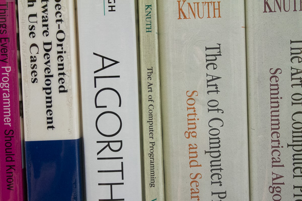

Have you experienced ageism in the workplace?
Terms like "Culture Fit".
Older applicants and workers are often told they will be let go or won't be hired because they aren't a good fit with the "culture" of the firm. Employers aren't allowed to use age as a basis for firing or not hiring an employee, but "culture fit" is much more nebulous and hard to define.
Terms like "Recent College Graduates/Digital Natives".
"Recent college graduates" doesn’t specifically discriminate by age, but it is a way of limiting new hires to younger workers.
Older workers are fired while younger workers are hired.
This is a sure sign that an employer is trying to cull out older workers.
When performance evaluations suddenly go from good to bad.
Poor performance evaluations are often cited as a reason to let older workers go. If evaluations went from good to bad over the course of a couple of years, that might be a sign that an employer wants to get rid of an employee for being too old.
Job reassignment.
Taking an employee away from a long time position and giving them a less attractive set of duties is a way to encourage them to leave before they have to be laid-off.
Not getting raises, especially when your performance has been strong.
Like job reassignment, withholding raises can be a way of encouraging older employees to leave early.
Comments about age.
A manager or employer who begins joking about when you are going to retire may be a sign of ageism.
Joking in an unflattering way about age.
Jokes about not being able to use technology, calling someone unflattering names based on their age, or making jokes about the sexuality of older adults are all signs of agism.